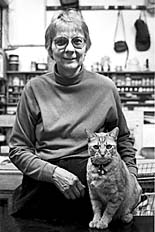

Marilyn Levine was born in 1935 in Medicine Hat, Alberta. She moved to Edmonton to study chemistry at the University of Alberta, earning a master's degree in 1959. In 1961, she moved to Regina, but was unable to find work in her field. She
then enrolled in art classes at the University of Saskatchewan's Regina Campus.

Levine earned her master's degrees in Arts, and then in Fine Arts (sculpture) at the University of California at Berkeley in 1970 and 1971. There, she became interested in creating highly realistic sculptures of objects like leather boots,
jackets, and handbags. Her work was widely exhibited, appearing in galleries throughout Canada and the U.S., and in Paris and Tokyo.